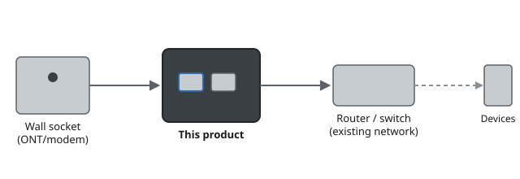

Instalação
Este capítulo cobre a instalação física do dispositivo — onde colocá-lo, o que conectar nele, e os passos exatos para colocá-lo em funcionamento.
Escolhendo um Local
Coloque o dispositivo em uma superfície plana e estável, ou monte-o na parede usando o suporte incluso. Deixe pelo menos 10 cm de espaço livre em todos os lados para ventilação, e mantenha-o afastado de outros eletrônicos, armários metálicos e paredes espessas que possam enfraquecer o sinal sem fio.
Conexões Físicas em Resumo
O painel traseiro (veja a figura em Especificações Técnicas) tem quatro tipos de conectores usados durante a instalação:
- WAN — conecta à sua fonte de internet (ONT, modem)
- LAN 1–4 — conectam dispositivos com fio à sua rede local
- USB — para um disco externo compartilhado ou impressora
- Alimentação — somente a fonte de 12 V / 1 A inclusa
Etapas de Instalação
Instruções numeradas passo a passo são a espinha dorsal de qualquer seção de instalação — usa o padrão .steps (uma <ol> simples estilizada com círculos numerados via CSS counters, sem JS).
- Escolha uma superfície plana e ventilada, ou o suporte de parede incluso, longe da luz solar direta e de outras fontes de calor.
- Conecte um cabo Ethernet da tomada de parede (ONT/modem) à porta WAN do dispositivo.
- Conecte o dispositivo ao seu roteador ou switch usando um segundo cabo Ethernet.
- Conecte a fonte de alimentação e aguarde o LED de status ficar verde fixo (cerca de 60 segundos).
- Continue para Configuração Inicial.
